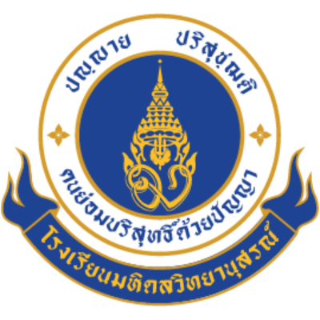

High Schools
In Thailand, some high schools have earned a reputation for offering an exceptional blend of academic rigor, cultural richness, and global outlook. These institutions are not only recognized for their top-tier educational programs but also for their commitment to nurturing well-rounded individuals prepared to excel in a rapidly changing world. With a focus on innovation, leadership, and personal growth, the top high schools in Thailand are shaping the future of young minds, offering them the tools they need to succeed both locally and internationally.
1.Mahidol Wittayanusorn School


Thailand's first specialized science boarding school for
grades 10–12. Known for full scholarships and top national test scores (O-NET)
2.Triam Udom Suksa School
Triam Udom Suksa School – Widely recognized as one of Thailand’s top general secondary schools
3.Suankularb Wittayalai School
Suankularb Wittayalai School – The oldest public secondary school in Thailand, founded in 1882.
4.Hatyaiwittayalai School
Hatyaiwittayalai School – A leading secondary school in Songkhla province
5.Samsen Wittayalai School
Samsen Wittayalai School – A well-regarded Bangkok secondary school
6.Bunyawat Witthayalai School
Bunyawat Witthayalai School – A top Lampang school
7.Bodindecha School
Bodindecha School - Top Bangkok school known for academics and activities.
8.Patumwan Demonstration School
Patumwan Demonstration School - Prestigious school under Srinakharinwirot University.
9.Debsirin School
.Debsirin School – Established in 1885 by King Chulalongkorn
10.Kanaratbumrung Pathumthani School
Kanaratbumrung Pathumthani school - Key southern school promoting education in a diverse region.